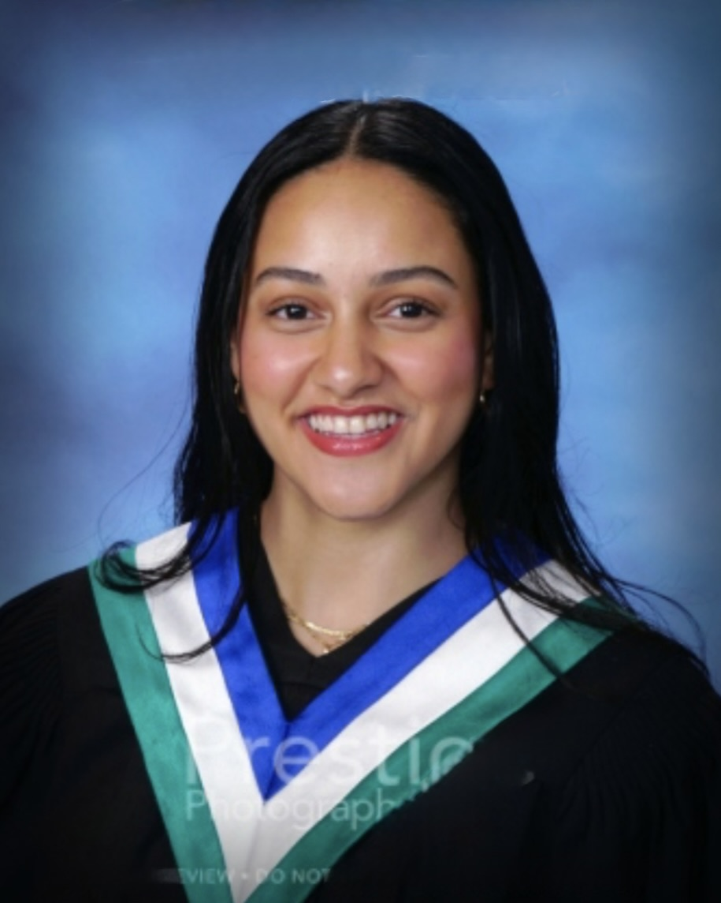

About Me
I am a student at Queen’s School of Computing. I’m interested in medicine, philosophy, biotechnology, art such as music, piano, painting and crafts as well as sports like soccer and swimming.
Courses
- CISC 121 — Introduction to design, analysis, and implementation of algorithms.
- PHIL 111 — Course structured both around some important themes and the broad sweep of philosophy’s history.
- COGS 100 — A multidisciplinary approach to the study of the mind combining approaches from philosophy, psychology, linguistics, neuroscience, anthropology, and artificial intelligence.
- BIOL 103 — Studies the origins and diversification of multicellular organisms, their form, function and adaptation to stress and a changing world.
- MUSC 156 — Basics of digital audio recording, with a focus on free/open-source software tools.
Contact
Email: 24vc39@queensu.ca
LinkedIn: https://www.linkedin.com/in/farah-zaza/